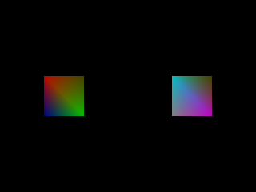

Vertex Array Objects

Last Updated 10/19/14
So far we've only been setting vertex position pointers, texture coordinate pointers, and color pointers. In a full 3D OpenGL application, you could be setting vertex, normal, color, texture, ambient material, diffuse material, multitexture, etc pointers. Having to set the individual data pointers every single time we draw can be tedious and wasteful. Using vertex array objects, you set your vertex array attributes once and bind your VAO when you need it.From main.cpp
//Create OpenGL 3.0 context
glutInitContextVersion( 3, 0 );
VAOs were promoted to the OpenGL core in version 3.0. If your GPU supports the ARB_vertex_array_object extension, you can still use it as an extension.
From LDoubleMultiColorPolygonProgram2D.glvs
#version 130
//Transformation Matrices
uniform mat4 LProjectionMatrix;
uniform mat4 LModelViewMatrix;
//Vertex position attribute
in vec2 LVertexPos2D;
//Multicolor attribute
in vec4 LMultiColor1;
in vec4 LMultiColor2;
out vec4 multiColor;
void main()
{
//Process color
multiColor = LMultiColor1 * LMultiColor2;
//Process vertex
gl_Position = LProjectionMatrix * LModelViewMatrix * vec4( LVertexPos2D.x, LVertexPos2D.y, 0.0, 1.0 );
}
We're creating a new shader program to test out VAOs. The double multicolor polygon program takes in a vertex position attribute and two color attributes per vertex. It takes the
two color attributes and component multiplies them to get the final color attribute to pass onto the fragment shader.
We're also not bothering with GLSL 1.2 code. At the top of the shader source we use the version macro to specfy that we're using GLSL 1.3 for this source code.
We're also not bothering with GLSL 1.2 code. At the top of the shader source we use the version macro to specfy that we're using GLSL 1.3 for this source code.
From LDoubleMultiColorPolygonProgram2D.glfs
#version 130
//Multicolor attribute
in vec4 multiColor;
//Final color
out vec4 LFragment;
void main()
{
//Set fragment
LFragment = multiColor;
}
The fragment shader largely the same as before only now instead of using an old reserved word we declare "LFragment" to specify the color that goes out to the color buffer.
From LDoubleMultiColorPolygonProgram2D.h
void setVertexPointer( GLsizei stride, const GLvoid* data );
/*
Pre Condition:
-Bound LMultiColorPolygonProgram2D
Post Condition:
-Sets vertex position attribute pointer
Side Effects:
-None
*/
void setColor1Pointer( GLsizei stride, const GLvoid* data );
/*
Pre Condition:
-Bound LMultiColorPolygonProgram2D
Post Condition:
-Sets vertex color 1 attribute pointer
Side Effects:
-None
*/
void setColor2Pointer( GLsizei stride, const GLvoid* data );
/*
Pre Condition:
-Bound LMultiColorPolygonProgram2D
Post Condition:
-Sets vertex color 2 attribute pointer
Side Effects:
-None
*/
void enableDataPointers();
/*
Pre Condition:
-Bound LDoubleMultiColorPolygonProgram2D
Post Condition:
-Enables all attributes
Side Effects:
-None
*/
void disableDataPointers();
/*
Pre Condition:
-Bound LDoubleMultiColorPolygonProgram2D
Post Condition:
-Disables all attributes
Side Effects:
-None
*/
The shader program for our new shader is largely the same as before only now it has functions for two color attribute pointers. Also, instead of having a function to enable/disable
each individual attribute, we have one pair of functions to enable/disable them with one function call.
From LDoubleMultiColorPolygonProgram2D.cpp
//Get variable locations
mVertexPos2DLocation = glGetAttribLocation( mProgramID, "LVertexPos2D" );
if( mVertexPos2DLocation == -1 )
{
printf( "%s is not a valid glsl program variable!\n", "LVertexPos2D" );
}
mMultiColor1Location = glGetAttribLocation( mProgramID, "LMultiColor1" );
if( mMultiColor1Location == -1 )
{
printf( "%s is not a valid glsl program variable!\n", "LMultiColor1" );
}
mMultiColor2Location = glGetAttribLocation( mProgramID, "LMultiColor2" );
if( mMultiColor2Location == -1 )
{
printf( "%s is not a valid glsl program variable!\n", "LMultiColor2" );
}
mProjectionMatrixLocation = glGetUniformLocation( mProgramID, "LProjectionMatrix" );
if( mProjectionMatrixLocation == -1 )
{
printf( "%s is not a valid glsl program variable!\n", "LProjectionMatrix" );
}
mModelViewMatrixLocation = glGetUniformLocation( mProgramID, "LModelViewMatrix" );
if( mModelViewMatrixLocation == -1 )
{
printf( "%s is not a valid glsl program variable!\n", "LModelViewMatrix" );
}
return true;
}
Loading this shader program is pretty much the same. We just got to remember to get the locations for all of our variables.
From LDoubleMultiColorPolygonProgram2D.cpp
void LDoubleMultiColorPolygonProgram2D::setVertexPointer( GLsizei stride, const GLvoid* data )
{
glVertexAttribPointer( mVertexPos2DLocation, 2, GL_FLOAT, GL_FALSE, stride, data );
}
void LDoubleMultiColorPolygonProgram2D::setColor1Pointer( GLsizei stride, const GLvoid* data )
{
glVertexAttribPointer( mMultiColor1Location, 4, GL_FLOAT, GL_FALSE, stride, data );
}
void LDoubleMultiColorPolygonProgram2D::setColor2Pointer( GLsizei stride, const GLvoid* data )
{
glVertexAttribPointer( mMultiColor2Location, 4, GL_FLOAT, GL_FALSE, stride, data );
}
void LDoubleMultiColorPolygonProgram2D::enableDataPointers()
{
glEnableVertexAttribArray( mVertexPos2DLocation );
glEnableVertexAttribArray( mMultiColor1Location );
glEnableVertexAttribArray( mMultiColor2Location );
}
void LDoubleMultiColorPolygonProgram2D::disableDataPointers()
{
glDisableVertexAttribArray( mMultiColor2Location );
glDisableVertexAttribArray( mMultiColor1Location );
glDisableVertexAttribArray( mVertexPos2DLocation );
}
All this should look familiar. This big difference here is that we have the all in one enable/disable attribute functions.
From LUtil.cpp
//Double Multicolor shader
LDoubleMultiColorPolygonProgram2D gDoubleMultiColorPolygonProgram2D;
//VBO names
GLuint gVertexVBO = NULL;
GLuint gRGBYVBO = NULL;
GLuint gCYMWVBO = NULL;
GLuint gGrayVBO = NULL;
GLuint gIBO = NULL;
//VAO Names
GLuint gLeftVAO = NULL;
GLuint gRightVAO = NULL;
At the top of LUtil.cpp we have our shader program object like we usually do. This time around we have 4 vertex buffers.
We have a vertex buffer of 4 vertex positions, a VBO for a red, green, blue and yellow colors, a VBO for cyan, yellow, magenta, and white colors, and a VBO for 4 shades of grey. We also have our IBO like we did before.
Next we have the VAO for the left quad and the VAO for the right quad. They have integer names just like textures, VBO, shaders, shader programs, and just about everything else we've worked with.
The quad on the left is going to have the vertex positions, RGBY colors, and the grey colors attribute pointers. The quad on the right is going to have the vertex positions, CYMW colors, and the grey colors attribute pointers.
We have a vertex buffer of 4 vertex positions, a VBO for a red, green, blue and yellow colors, a VBO for cyan, yellow, magenta, and white colors, and a VBO for 4 shades of grey. We also have our IBO like we did before.
Next we have the VAO for the left quad and the VAO for the right quad. They have integer names just like textures, VBO, shaders, shader programs, and just about everything else we've worked with.
The quad on the left is going to have the vertex positions, RGBY colors, and the grey colors attribute pointers. The quad on the right is going to have the vertex positions, CYMW colors, and the grey colors attribute pointers.
From LUtil.cpp
bool loadGP()
{
//Load double multicolor shader program
if( !gDoubleMultiColorPolygonProgram2D.loadProgram() )
{
printf( "Unable to load double multicolor shader!\n" );
return false;
}
//Bind double multicolor shader program
gDoubleMultiColorPolygonProgram2D.bind();
//Initialize projection
gDoubleMultiColorPolygonProgram2D.setProjection( glm::ortho<GLfloat>( 0.0, SCREEN_WIDTH, SCREEN_HEIGHT, 0.0, 1.0, -1.0 ) );
gDoubleMultiColorPolygonProgram2D.updateProjection();
//Initialize modelview
gDoubleMultiColorPolygonProgram2D.setModelView( glm::mat4() );
gDoubleMultiColorPolygonProgram2D.updateModelView();
return true;
}
Here we load our shader program like we usually do.
From LUtil.cpp
bool loadMedia()
{
//VBO data
LVertexPos2D quadPos[ 4 ];
LColorRGBA quadColorRGBY[ 4 ];
LColorRGBA quadColorCYMW[ 4 ];
LColorRGBA quadColorGray[ 4 ];
GLuint indices[ 4 ];
//Set quad verticies
quadPos[ 0 ].x = -50.f;
quadPos[ 0 ].y = -50.f;
quadPos[ 1 ].x = 50.f;
quadPos[ 1 ].y = -50.f;
quadPos[ 2 ].x = 50.f;
quadPos[ 2 ].y = 50.f;
quadPos[ 3 ].x = -50.f;
quadPos[ 3 ].y = 50.f;
quadColorRGBY[ 0 ].r = 1.f;
quadColorRGBY[ 0 ].g = 0.f;
quadColorRGBY[ 0 ].b = 0.f;
quadColorRGBY[ 0 ].a = 1.f;
quadColorRGBY[ 1 ].r = 1.f;
quadColorRGBY[ 1 ].g = 1.f;
quadColorRGBY[ 1 ].b = 0.f;
quadColorRGBY[ 1 ].a = 1.f;
quadColorRGBY[ 2 ].r = 0.f;
quadColorRGBY[ 2 ].g = 1.f;
quadColorRGBY[ 2 ].b = 0.f;
quadColorRGBY[ 2 ].a = 1.f;
quadColorRGBY[ 3 ].r = 0.f;
quadColorRGBY[ 3 ].g = 0.f;
quadColorRGBY[ 3 ].b = 1.f;
quadColorRGBY[ 3 ].a = 1.f;
quadColorCYMW[ 0 ].r = 0.f;
quadColorCYMW[ 0 ].g = 1.f;
quadColorCYMW[ 0 ].b = 1.f;
quadColorCYMW[ 0 ].a = 1.f;
quadColorCYMW[ 1 ].r = 1.f;
quadColorCYMW[ 1 ].g = 1.f;
quadColorCYMW[ 1 ].b = 0.f;
quadColorCYMW[ 1 ].a = 1.f;
quadColorCYMW[ 2 ].r = 1.f;
quadColorCYMW[ 2 ].g = 0.f;
quadColorCYMW[ 2 ].b = 1.f;
quadColorCYMW[ 2 ].a = 1.f;
quadColorCYMW[ 3 ].r = 1.f;
quadColorCYMW[ 3 ].g = 1.f;
quadColorCYMW[ 3 ].b = 1.f;
quadColorCYMW[ 3 ].a = 1.f;
quadColorGray[ 0 ].r = 0.75f;
quadColorGray[ 0 ].g = 0.75f;
quadColorGray[ 0 ].b = 0.75f;
quadColorGray[ 0 ].a = 1.f;
quadColorGray[ 1 ].r = 0.50f;
quadColorGray[ 1 ].g = 0.50f;
quadColorGray[ 1 ].b = 0.50f;
quadColorGray[ 1 ].a = 0.50f;
quadColorGray[ 2 ].r = 0.75f;
quadColorGray[ 2 ].g = 0.75f;
quadColorGray[ 2 ].b = 0.75f;
quadColorGray[ 2 ].a = 1.f;
quadColorGray[ 3 ].r = 0.50f;
quadColorGray[ 3 ].g = 0.50f;
quadColorGray[ 3 ].b = 0.50f;
quadColorGray[ 3 ].a = 1.f;
//Set rendering indices
indices[ 0 ] = 0;
indices[ 1 ] = 1;
indices[ 2 ] = 2;
indices[ 3 ] = 3;
Here we set the VBO data and IBO data.
From LUtil.cpp
//Create VBOs
glGenBuffers( 1, &gVertexVBO );
glBindBuffer( GL_ARRAY_BUFFER, gVertexVBO );
glBufferData( GL_ARRAY_BUFFER, 4 * sizeof(LVertexPos2D), quadPos, GL_STATIC_DRAW );
glGenBuffers( 1, &gRGBYVBO );
glBindBuffer( GL_ARRAY_BUFFER, gRGBYVBO );
glBufferData( GL_ARRAY_BUFFER, 4 * sizeof(LColorRGBA), quadColorRGBY, GL_STATIC_DRAW );
glGenBuffers( 1, &gCYMWVBO );
glBindBuffer( GL_ARRAY_BUFFER, gCYMWVBO );
glBufferData( GL_ARRAY_BUFFER, 4 * sizeof(LColorRGBA), quadColorCYMW, GL_STATIC_DRAW );
glGenBuffers( 1, &gGrayVBO );
glBindBuffer( GL_ARRAY_BUFFER, gGrayVBO );
glBufferData( GL_ARRAY_BUFFER, 4 * sizeof(LColorRGBA), quadColorGray, GL_STATIC_DRAW );
//Create IBO
glGenBuffers( 1, &gIBO );
glBindBuffer( GL_ELEMENT_ARRAY_BUFFER, gIBO );
glBufferData( GL_ELEMENT_ARRAY_BUFFER, 4 * sizeof(GLuint), indices, GL_STATIC_DRAW );
Here we create the VBOs for the vertex position, RGBY color, CYMW color, and gray color attributes. We also create the IBO.
From LUtil.cpp
//Generate left quad VAO
glGenVertexArrays( 1, &gLeftVAO );
//Bind vertex array
glBindVertexArray( gLeftVAO );
//Enable vertex attributes
gDoubleMultiColorPolygonProgram2D.enableDataPointers();
//Set vertex data
glBindBuffer( GL_ARRAY_BUFFER, gVertexVBO );
gDoubleMultiColorPolygonProgram2D.setVertexPointer( 0, NULL );
glBindBuffer( GL_ARRAY_BUFFER, gRGBYVBO );
gDoubleMultiColorPolygonProgram2D.setColor1Pointer( 0, NULL );
glBindBuffer( GL_ARRAY_BUFFER, gGrayVBO );
gDoubleMultiColorPolygonProgram2D.setColor2Pointer( 0, NULL );
glBindBuffer( GL_ELEMENT_ARRAY_BUFFER, gIBO );
//Unbind VAO
glBindVertexArray( NULL );
Now it's time to generate the VAO for the left quad using glGenVertexArrays(). After generating it we bind it using glBindVertexArray().
When we have our VAO bound, any changes made to the vertex attribute state are made to the currently bound VAO. Here we're enabling all the data pointers for our shader program, setting the vertex position data pointer, setting the two color pointers, and setting the IBO. Then we unbind the VAO by binding null.
If we were to bind this VAO again, it would enable all the attributes that we enabled on here, set all the pointers we set here, and set the IBO we set here.
When we have our VAO bound, any changes made to the vertex attribute state are made to the currently bound VAO. Here we're enabling all the data pointers for our shader program, setting the vertex position data pointer, setting the two color pointers, and setting the IBO. Then we unbind the VAO by binding null.
If we were to bind this VAO again, it would enable all the attributes that we enabled on here, set all the pointers we set here, and set the IBO we set here.
From LUtil.cpp
//Generate right quad VAO
glGenVertexArrays( 1, &gRightVAO );
//Bind vertex array
glBindVertexArray( gRightVAO );
//Enable vertex attributes
gDoubleMultiColorPolygonProgram2D.enableDataPointers();
//Set vertex data
glBindBuffer( GL_ARRAY_BUFFER, gVertexVBO );
gDoubleMultiColorPolygonProgram2D.setVertexPointer( 0, NULL );
glBindBuffer( GL_ARRAY_BUFFER, gCYMWVBO );
gDoubleMultiColorPolygonProgram2D.setColor1Pointer( 0, NULL );
glBindBuffer( GL_ARRAY_BUFFER, gGrayVBO );
gDoubleMultiColorPolygonProgram2D.setColor2Pointer( 0, NULL );
glBindBuffer( GL_ELEMENT_ARRAY_BUFFER, gIBO );
//Unbind VAO
glBindVertexArray( NULL );
Here we create and set the VAO for the right quad much like we did left quad, only here we're using the CYMW color instead of the RGBY color that the left quad is using.
From LUtil.cpp
void render()
{
//Clear color buffer
glClear( GL_COLOR_BUFFER_BIT );
//Multicolor quad on the left
gDoubleMultiColorPolygonProgram2D.setModelView( glm::translate<GLfloat>( glm::vec3(SCREEN_WIDTH * 1.f / 4.f, SCREEN_HEIGHT / 2.f, 0.f ) ) );
gDoubleMultiColorPolygonProgram2D.updateModelView();
//Set left vertex array object
glBindVertexArray( gLeftVAO );
glDrawElements( GL_TRIANGLE_FAN, 4, GL_UNSIGNED_INT, NULL );
//Multicolor quad on the right
gDoubleMultiColorPolygonProgram2D.setModelView( glm::translate<GLfloat>( glm::vec3( SCREEN_WIDTH * 3.f / 4.f, SCREEN_HEIGHT / 2.f, 0.f ) ) );
gDoubleMultiColorPolygonProgram2D.updateModelView();
//Set right vertex array object
glBindVertexArray( gRightVAO );
glDrawElements( GL_TRIANGLE_FAN, 4, GL_UNSIGNED_INT, NULL );
//Update screen
glutSwapBuffers();
}
Now when drawing the left quad with glDrawElements() instead of making 1 function call to enable the attribute pointers, 3 more calls to set the attribute pointers, and one more to
set the IBO, we make one call to bind the VAO with all the attributes states set and draw.
It's the same story with here when we render the right quad were we make one call to set the vertex states we need as opposed to 5. When used properly, VAOs can save you quite a bit of hassle.
It's the same story with here when we render the right quad were we make one call to set the vertex states we need as opposed to 5. When used properly, VAOs can save you quite a bit of hassle.